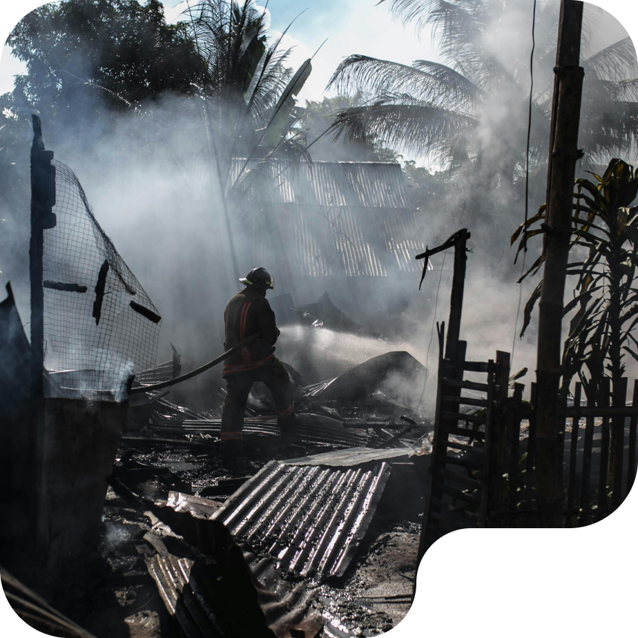

Exactly at two in the morning, Monday 12 July, a number of residents' houses in the Penajam Village area caught fire. It is suspected that this fire was caused by a leak at one of the oil refineries operating there. This fire caused dozens of people to be injured and several suffered serious injuries and are undergoing treatment at the nearest hospital.
Krikil Peduli (Kipli) is present as a platform that accommodates the community in raising funds and also assistance for people in need. Krikil Peduli was born as a response to the unheard cries of affected communities